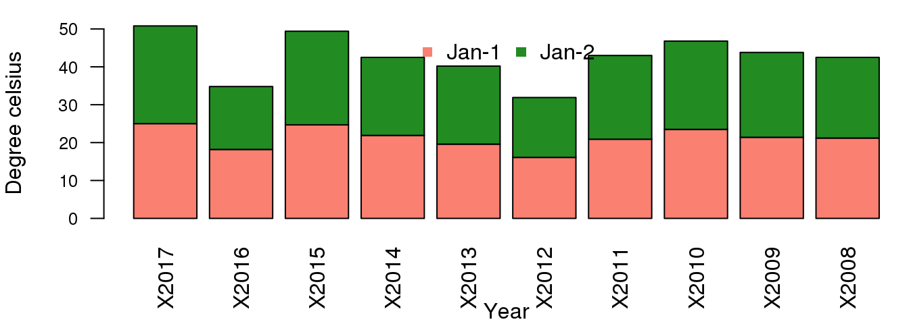

6.1 Native R methods
6.1.1 Boxplots
The boxplot is a widely used plot that can summarise the distribution of data within a collection. We routinely use boxplots to show a trend within data during e.g. signal intensity of DNA microarrays or read-counts for a single gene across different experimental condition.
In this example we will prepare a boxplot for signal intensity across different arrays in our gene.atlas data set. The simplest way is to call the native boxplot() function. This produces a reasonable summary view of the data, but not one that would be suitable for publication purposes.
The command below generates a boxplot of 1000 gene expression values for the first 15 samples. Remember, gene.atlas contains over 22,000 expression values and 158 samples
boxplot(log2(gene.atlas[sample(nrow(gene.atlas), 1000), seq(15)]))
There are other arguments you can use to add to the plot for example:
main='Expr distribution'to add a title to the plotlas=2will rotate the x-axis labels to 90 degrees. (0=parallel, 1=horizontal, 2=perpendicular to the axis, 3=vertical)cex.axis = 0.8to change the font size of the tick labelsxlab='sample'to label x-axescol=rainbow(15)to add colours to the bars.rainbow(15)is a builtin colours palette in R, this returns 15 colours.- and more, use
?barplotto use Help to find out more about the function.
6.1.2 Histograms
A histogram shows the distribution of data for typically a single sample.
Let’s use the same data that we used in the boxplot example but concentrating on the signal intensity for the first sample only.
# The base graphics way
# Create a data frame slice containing our target expression data
channel.data <- data.frame(Signal=log2(gene.atlas[sample(nrow(gene.atlas),1000),1]))
# hist() is the built-in histogram function
# [, 1] selects the first (and in this case, only) column of data from channel.data
hist(channel.data[, 1])
6.1.3 Bar charts
A barchart is superficially similar to a histogram in the bars of data are displayed. Bar charts are ideal for displaying counts associated with categorical data.
The example chart here simply presents the number of diamonds in a database of diamonds that have been assigned to particular classes of cut. The diamonds data comes from one of the many datasets built into R that you can use for testing and experimentation. For a full list of these, use library(help="datasets").
# Let's start by having a look at the data
head(diamonds)## Source: local data frame [6 x 10]
##
## carat cut color clarity depth table price x y z
## (dbl) (fctr) (fctr) (fctr) (dbl) (dbl) (int) (dbl) (dbl) (dbl)
## 1 0.23 Ideal E SI2 61.5 55 326 3.95 3.98 2.43
## 2 0.21 Premium E SI1 59.8 61 326 3.89 3.84 2.31
## 3 0.23 Good E VS1 56.9 65 327 4.05 4.07 2.31
## 4 0.29 Premium I VS2 62.4 58 334 4.20 4.23 2.63
## 5 0.31 Good J SI2 63.3 58 335 4.34 4.35 2.75
## 6 0.24 Very Good J VVS2 62.8 57 336 3.94 3.96 2.48str(diamonds)## Classes 'tbl_df', 'tbl' and 'data.frame': 53940 obs. of 10 variables:
## $ carat : num 0.23 0.21 0.23 0.29 0.31 0.24 0.24 0.26 0.22 0.23 ...
## $ cut : Ord.factor w/ 5 levels "Fair"<"Good"<..: 5 4 2 4 2 3 3 3 1 3 ...
## $ color : Ord.factor w/ 7 levels "D"<"E"<"F"<"G"<..: 2 2 2 6 7 7 6 5 2 5 ...
## $ clarity: Ord.factor w/ 8 levels "I1"<"SI2"<"SI1"<..: 2 3 5 4 2 6 7 3 4 5 ...
## $ depth : num 61.5 59.8 56.9 62.4 63.3 62.8 62.3 61.9 65.1 59.4 ...
## $ table : num 55 61 65 58 58 57 57 55 61 61 ...
## $ price : int 326 326 327 334 335 336 336 337 337 338 ...
## $ x : num 3.95 3.89 4.05 4.2 4.34 3.94 3.95 4.07 3.87 4 ...
## $ y : num 3.98 3.84 4.07 4.23 4.35 3.96 3.98 4.11 3.78 4.05 ...
## $ z : num 2.43 2.31 2.31 2.63 2.75 2.48 2.47 2.53 2.49 2.39 ...# Barplot using base version of barplot, grouping by the 'cut' category
barplot(table(diamonds[,"cut"]),main="Counts by cut")
barplot(table(diamonds[,"color"]),col=rainbow(7),main="Counts by Color")
6.1.4 Scatterplots
Scatterplots are widely used for plotting data where an object has mutiple variables. This is a quick way to look for any correlation in the dataset.
The iris dataset, another built-in dataset in R, describes three varieties of the iris flower and a number of attributes that include the sepal and petal lengths and widths. In this case we are going to plot sepal length against width for three species of iris.
head(iris)## Sepal.Length Sepal.Width Petal.Length Petal.Width Species
## 1 5.1 3.5 1.4 0.2 setosa
## 2 4.9 3.0 1.4 0.2 setosa
## 3 4.7 3.2 1.3 0.2 setosa
## 4 4.6 3.1 1.5 0.2 setosa
## 5 5.0 3.6 1.4 0.2 setosa
## 6 5.4 3.9 1.7 0.4 setosastr(iris)## 'data.frame': 150 obs. of 5 variables:
## $ Sepal.Length: num 5.1 4.9 4.7 4.6 5 5.4 4.6 5 4.4 4.9 ...
## $ Sepal.Width : num 3.5 3 3.2 3.1 3.6 3.9 3.4 3.4 2.9 3.1 ...
## $ Petal.Length: num 1.4 1.4 1.3 1.5 1.4 1.7 1.4 1.5 1.4 1.5 ...
## $ Petal.Width : num 0.2 0.2 0.2 0.2 0.2 0.4 0.3 0.2 0.2 0.1 ...
## $ Species : Factor w/ 3 levels "setosa","versicolor",..: 1 1 1 1 1 1 1 1 1 1 ...plot(iris$Sepal.Length, iris$Sepal.Width, col=iris$Species, pch=16)
The pch option specifies the type of symbol that can be used in a plot. Search ?pch which will bring up the Help documentation and the list of symbols that are available.